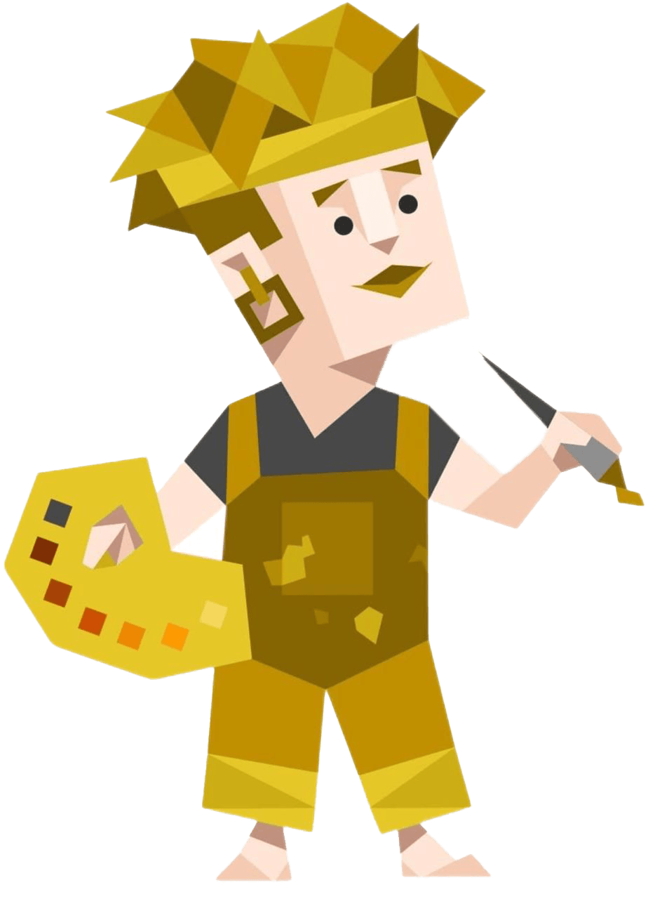
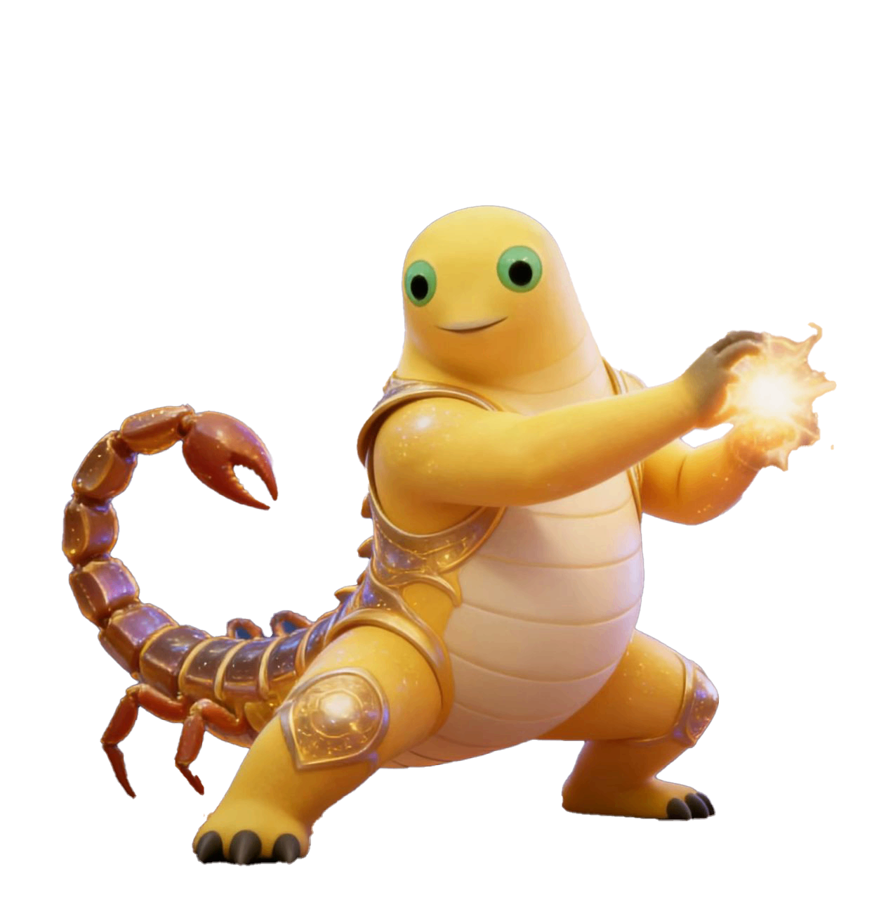

不要Stalk我！😡
喜欢我不是人之常情吗 毕竟我又漂亮 又善良 又能搞笑 又能正经 又能甜美 又有爱心 又有上进心 试问谁能抵挡我的魅力？
喜欢我不是人之常情吗 毕竟我又漂亮 又善良 又能搞笑 又能正经 又能甜美 又有爱心 又有上进心 试问谁能抵挡我的魅力？
点击以下卡片 选择你的原因


那就让你再了解我多一点！👇
睡觉真的好 大家都喜欢睡觉 晚上睡得香 白天睡得甜 有阳光的时候睡 阴天的时候睡 下雨天听雨声睡 冬天蜷在被窝里睡 无聊的时候睡 疲惫的时候睡 小睡怡情 大睡舒爽 熊爱睡觉 全世界的人都爱睡觉

你亮屏时清晰的光影 你播放时动听的旋律 你握在掌心温润的触感 你盛满回忆的相册 你弹出消息时轻轻的震动 你续航在线时安心的陪伴 你导航时精准的指引 你聊天时暖心的字句 你播放音乐时的治愈 你总存着我的草稿 你加载时的转圈 你干净的界面 你多样的功能 你解锁时的便捷 你的桀骜不羁 你做事的干脆利索 你偶尔卡顿的小脾气 你的所有所有 你有时强大有时需要充电 我喜欢你任何样子 包括你的型号 一笔一划刻在我心

不知道 我的作息很微妙


走一步看一步 实在不行鼠半路
“我都行” “别管我” “随便” “到时候再讲” “不得空” “关你屁事”

一手遮天蝎座 无法无天蝎座 一步登天蝎座 义薄云天蝎座 胆大包天蝎座 盘古开天蝎座 恨海情天蝎座